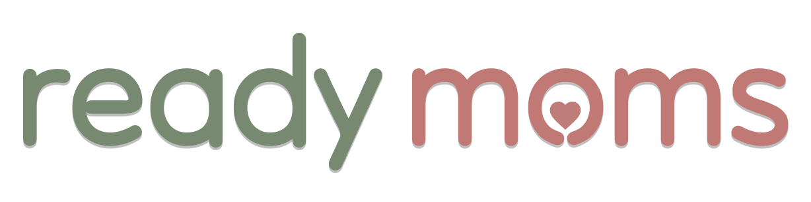
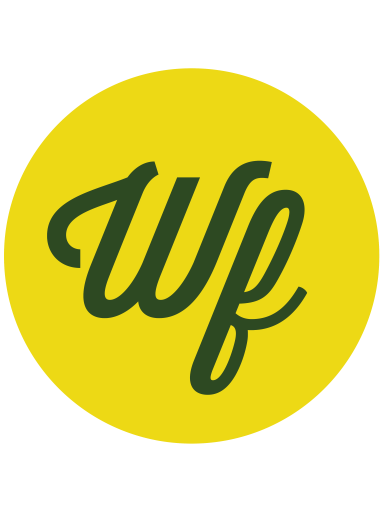

Selected work
UX Design Case Studies

ReadyMoms Maternal health learning app
Operation Surf Volunteer coordination portal
Wellfed UX Fest SLO · 24-hour designathonSelected work

ReadyMoms Maternal health learning app
Operation Surf Volunteer coordination portal
Wellfed UX Fest SLO · 24-hour designathon